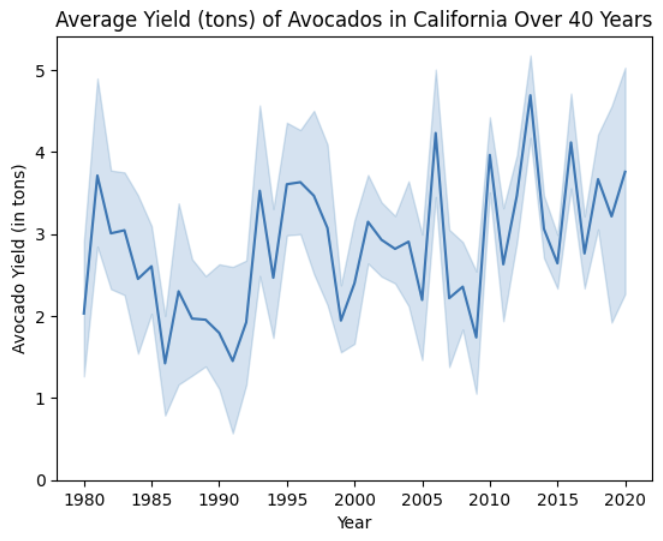
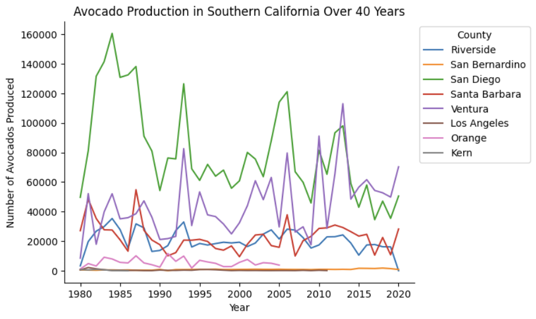

Portfolio Post
Avocado Growth in California Over 40 Years
Avocado growth in California is not something that California is necessarily known for. However, all avocados need is a hot climate to grow. In this report, we explore avocado yield and production in California. We also see some interesting results when we split up California into three geographical parts. Since California is so large, it's climate is quite variable across the state (i.e. the Southern part is hotter and probably more sustainable for avocado farming than the Northern part.)
A few questions I wanted to answer are below:
- How does yield change over 40 years? Production?
- What is the relationship between yield and production? Are avocados getting denser over time? Can they get denser?
- What counties have produced avocados over 40 years? What counties haven't?
- What does missing data mean?
General Data
The graph above shows a general upward trend in Avocado yields over 40 years. These are measured in tons. The average and range of the data for each year are represented by the solid blue line and translucent blue shading, respectively. Though there are dips over 40 years, the upward trend tells an interesting story, especially when you see our production trends shown below.

With this graph, we only see a slight upward trend (and even some stagnance) in avocado production across all California counties. If we focus our eyes directly on the translucent shading (range of data), we can see the ebs and flows of the data.
What does this mean in relation to the yield? It may mean that our avocados are getting denser. There's more avocado per avocado. With more data, we could see if gene editing is a factor.
Though the trend of avocado production seems stagnant, you can still see the correlation between the two features. Spikes and dips roughly match between the yield and production graphs.
Geographic Splits
Next up are some more Time Series for avocado growth in California, but split up by region.

Here, we see data for 3 counties in Northern California. A reminder about avocados: they need a hotter and wetter climate to grow.
Out of the 3 counties, only Monterey has kept up production for all 40 years and reached a maximum of over 1400 avocados. Not bad, but just keep scrolling.

We're looking a little better with Central California, though not every county here has data. San Luis Obispo appears to be the only county with data for all 40 years. The maximum number of avocados produced is higher in Central California than in Northern California -- it's getting hotter! And thus, the climate is getting better for growing avocados as we move further south.
Finally, we're in SoCal! We see data for 8 California counties here that immediately beat the production levels of the Northern and Central counties. Our maximum number of avocados produced reached over 160,000 around 1985. Although there is a downtrend decade-over-decade, the Southern part of the state still produces far more avocados. If I had more data and more time, I would explore why this data has seen a downward trend. Is environmental change making the climate too hot? Were there policy changes during the huge dips? Other events?
Overall, avocado growth in California is interesting. Through this data, we discovered that specific parts of California are consistently successful in growing avocados, and those avocados are potentially getting denser (leading to higher yields from the same production numbers). We also can see how simple the data is through our time series.